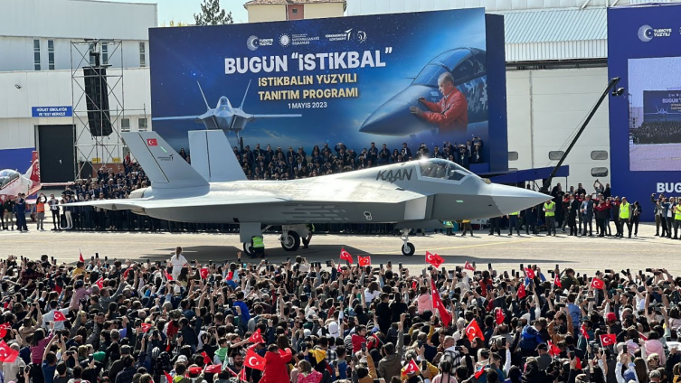

Detaylar için aşağı kaydırabilirsin!
İstanbul’da düzenlenen IDEF’23 fuarında en dikkat çekici anlaşmalardan biriydi Türkiye ile Azerbaycan’ın birlikte imzaladığı metin… Mutabakat her ne kadar 'Milli Muharip Uçak KAAN'ın geliştirme faaliyetleri de dahil olmak üzere üretim konularındaki iş birliğinin çalışma usul ve esaslarının belirlenmesi' gibi son derece diplomatik bir şekilde kaleme alınmış olsa da aslında arka planda çok değerli detaylar var.
Kamuoyuna yansıyan kimi bilgilere göre Türk ve Azerbaycan heyetleri arasında mutabık kalınan metin ilginç bir sürece de işaret ediyor. KAAN projesi için Azerbaycan'da yerleşik kabiliyetlerin belirlenmesi, değerlendirilmesi, uygun değerlendirilen tesis ve/veya firmalarda üretim hazırlıklarının yapılması,üretim kabiliyetlerinin geliştirilmesi ve tecrübe paylaşımlarının yapılması bunlardan bazıları.
Kadir Doğan, öncelikle KAAN dahil olmak üzere bir savaş uçağı geliştirme boyutundan ele alıyor meseleyi… Böyle bir projeyi geliştirmenin savunma sanayii açısından en büyük, en kapsamlı ve en maliyetli işlerinden biri olacağının altını çiziyor.
Savaş uçağı yapabilmek için yüzlerce hatta binlerce şirketin birlikte çalıştığını yine binlerce mühendisin birbirleriyle entegre bir şekilde geliştirdiği sistemlerin kullanıldığını kaydediyor. Hal böyle olunca bu gibi programların mali yükümlülükleri de çok yüksek bedellere ulaşmış oluyor.
İşin mali boyutu madalyonun elbette bir yüzü. Ancak Kadir Doğan madalyonun diğer yüzünü de çeviriyor ve belki de parasal konulardan çok daha önemli bir sürece işaret ediyor…
Konu bu noktada doğal olarak savunma sanayii projelerinin uluslararası ilişkiler ve dış politikaya etkisine geliyor. Bu süreci ‘bir savaş uçağı programı ortaklığının çok daha ötesi’ olarak niteliyor Doğan.
Bugün hiçbir ülkenin siyaseten ters düşebileceği, sorun yaşayacağı veya yaşama ihtimali olduğu bir ülkeyle böylesine büyük programda birlikte çalışmayacağını vurguluyor ve “Ürettiğiniz savaş uçağı sizin milli güvenliğinizin en önemli yapı taşlarından biridir. Haliyle kimse bunu tehlikeye atmak istemez” diyor.
